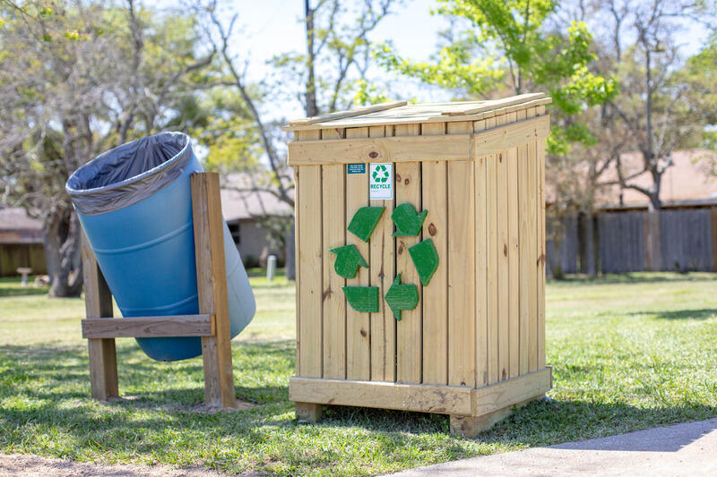

I am an Eagle Scout, and throughout my years in Scouting, I have given back to the community in many ways, including technical ways. For example, I designed, engineered, and assembled large recycle bins to be placed around Seabrook TX, and I have also managed the Troop 870 website. I have also participated in various other service projects, including mass trash-collecting efforts along beaches, other scouts' Eagle projects, and food bank volunteering.
I founded and led a conservation project that started a mass recycling effort in my city. Seabrook, Texas is filled with parks and jogging trails, where disposable water bottle use is extremely common. Throughout my life in Seabrook, I have always noticed an adequate amount of trash cans to minimize littering, but there were no opportunities to recycle empty water bottles throughout the parks and trails.
Using my knowledge in CAD modeling, I created a recycling bin design for optimal durability and aesthetics, and I obtained a list of the necessary materials. I then presented the design to the Seabrook Open Space and Trails Committee, with my plans on construction, distribution, and establishing locations so that the recyclable materials could be collected on a regular basis. The committee was greatly impressed with my work and decided they would fund the entire project.
After the meeting, I started planning out the construction process. I informed my Boy Scout troop about my project and collected a list of those planning to help with it. By communicating well with the Scouts and adults, everyone had a clear idea of their role in the project.
All around Seabrook, the constructed recycling bins are now on display and constantly used.
Below are some extra supporting links pertaining to my project: